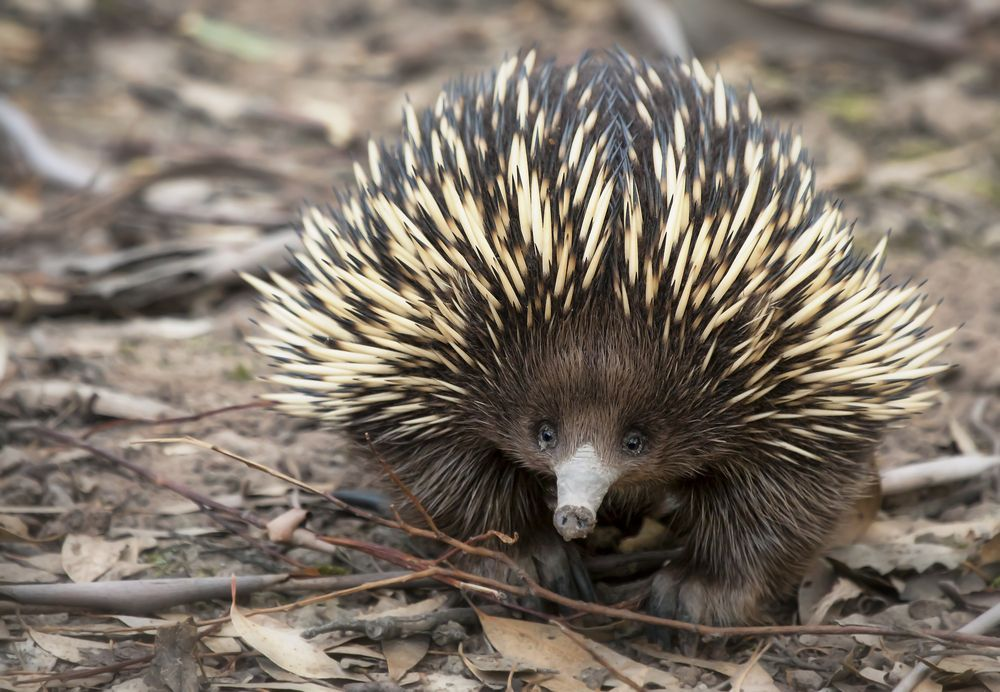

Echidna As Specie
The echidna is likewise a monotreme, growing to a maximum length
of 40 - 50 cm/ 1.4 ft and weighing around 5 - 6 kg/ 11 - 13 lbs.
The echidna's body is coated with spines, similar to those of a
porcupine or a hedgehog. Monotremes have a long, sticky tongue and
feed mostly on insects. When threatened, the echidna curls itself
into a little ball for protection. Echidna, (family
Tachyglossidae), commonly known as spiny anteater, any of four
strange egg-laying animals native to Australia, Tasmania, and New
Guinea that feed and breathe through a bald tubular beak emerging
from a spine-covered dome-shaped body. Echidnas have tiny eyes and
slit ears, with two little noses and a small mouth at the ends of
their beaks. Electroreceptors embedded in the surface of the beak
may detect electrical impulses produced by invertebrate prey
muscles. Echidnas are active day and night, probing the ground
gradually and meticulously in search of food, although they seek
refuge in tunnels or tunnels during the intense daytime heat.
Echidnas, like their related the platypus, have an exceptionally
low but changeable body temperature of 29–32 °C (84–90 °F) and are
unable of surviving at higher temperatures. Despite their
superficial similarity to hedgehogs, echidnas and hedgehogs are
unrelated and belong to distinct mammalian groups. The spines, the
number of claws on the foot, and the form and length of the beak
all serve as distinguishing characteristics of Echidna species.

Classification and Evolution
Echidnas belong to the family Tachyglossidae, and the platypus is
their sole extant cousin. These animals collectively comprise the
mammalian order Monotremata. Echidnas most likely arose during the
Paleogene Period from an unknown monotreme progenitor (65.5 to 23
million years ago). The absence of teeth in echidnas has
complicated research into their evolutionary history, as teeth
fossilize well and frequently aid in determining connections
between animals. The world's oldest known echidna fossil was
discovered in an eastern Australian cave deposit dating from
around 17 million years ago (during the early Miocene Epoch).
Although the evidence is sparse, it implies that at this period,
essential echidna traits such as the birdlike, toothed cranium and
powerful skeleton adapted for digging had developed. Echidnas
appear to have been widespread and diversified in the past, with
one particularly enormous variety reaching a length of more than
one metre (3.3 feet). The majority of fossil echidnas from recent
epochs are a hybrid between today's short- and long-beaked groups.
Reproduction and life cycle
Echidnas appear to gather only during mating season, whenever a
female may be pursued by a queue of suitors. Following around 23
days of gestation, the female typically deposits a single leathery
egg into a temporary pouch created by stomach muscles and
subcutaneous mammary tissue. The egg is incubated for an
additional ten days before hatching, aided by an egg tooth and
fleshy bulb (caruncle) — structural remnants of the creature's
reptilian ancestors. Young echidnas are safeguarded in an unique
nursery burrow, where they sucking milk from unique breast hairs
( nipples are absent). When the newborn echidna is completely
coated in spines and fur and is able to eat, it leaves the burrow
and lives alone. Echidnas enjoy extremely long lives; one was
reliably reported in the wild at 45 years of age, while one
captive echidna was quite well over 50 years old when it died.